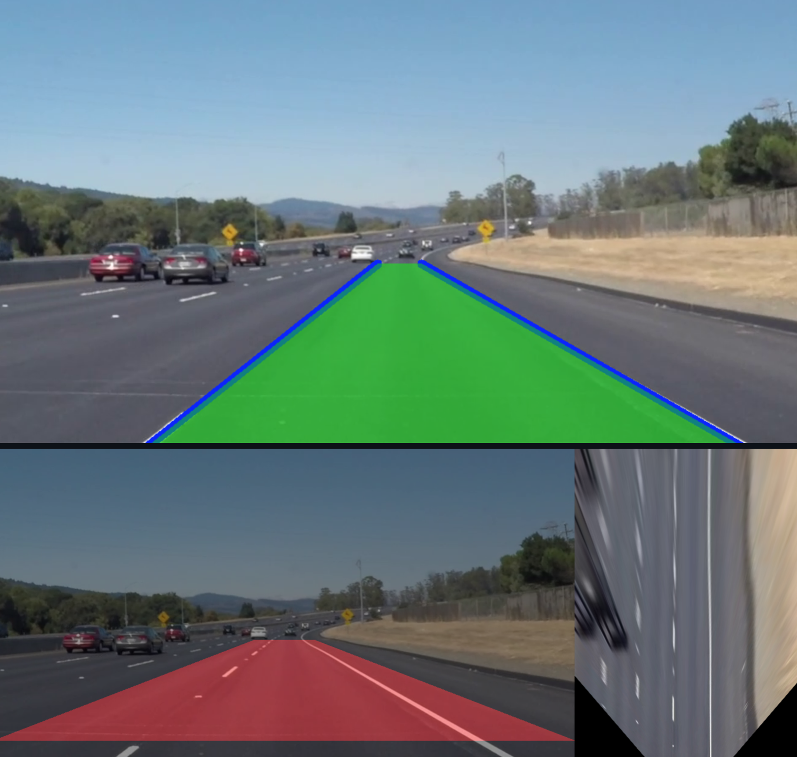
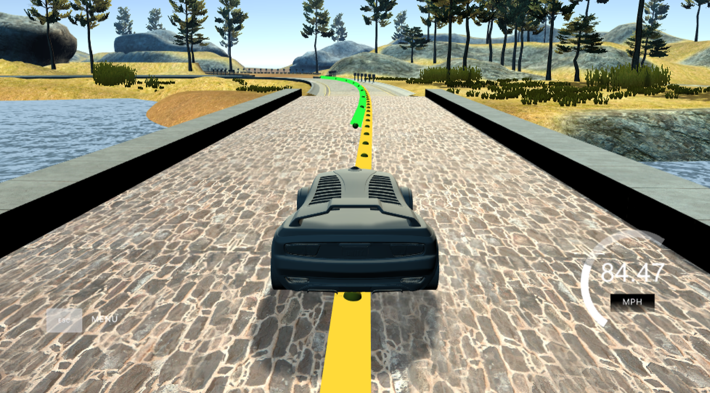

Projects
|
During the course of both my studies and professional career, I have been fortunate to work on very diverse topics. This page contains a summary of some projects that I have been recently working on. |
Safety-critical control via robust controlled invariant setsGithub Repo / Video
A safety enforcing controller should indefinitely keep the state of the system
within a set of safe states. One way to achieve this is by initializing the
state of the system inside a (Robust) Controlled Invariant Sets (RCIS) within
the set of safe states as starting any trajectory in an RCIS allows one to force
it to remain there.
|

Relevant publications:
|

Relevant publications:
|
rLTL: Formally reasoning about correctness and robustness in verificationGithub Repo
While most approaches in formal methods address system correctness, ensuring
robustness has remained a challenge. The logic rLTL provides a means to formally
reason about both correctness and robustness in system design. As a multi-valued
logic it augments the classic LTL in terms of expressiveness, the ability to
describe robustness, and the fine-grained information it brings to the process
of system verification.
|
|  |
Computer vision for autonomous vehicles perceptionGithub Repos: AV Lane Detection, PackNet Monocular Depth Estimation Trying to understand how one can enable an autonomous vehicle to "see", I played around with classic computer vision algorithms for:
Moving to more modern approaches, during my internship at Parallel Systems, I also evaluated different Deep Neural Networks (DNN) for monocular depth estimation on driving datasets, and compared to classic computer vision algorithms. I explored the features learned by each DNN and extensevely used Toyota Research Institute's (TRI) PackNet: 3D Packing for Self-Supervised Monocular Depth Estimation. I deployed DNNs for real-time inference onboard a moving rail vehicle using NVIDIA DeepStream, and implemented object-specific distance estimation procedures as part of a larger perception software. |
|  |
Modules for self driving cars
Github Repos:
EKF,
Path-Planning, MPC
While on the topic of autonomous vehicles, I have experience applying control theoretic approaches towards creating controllers for self-driving cars. More specifically I implemented:
|